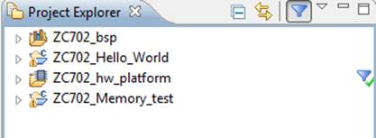

Example 1
Using the figure above for reference, to filter the projects that are related to the ZC702_hw_platform project, you would click the icon. SDK displays all projects related to the ZC702_hw_platform project.

To remove the project filter, click the Filter
Off button. 
SDK displays all projects.